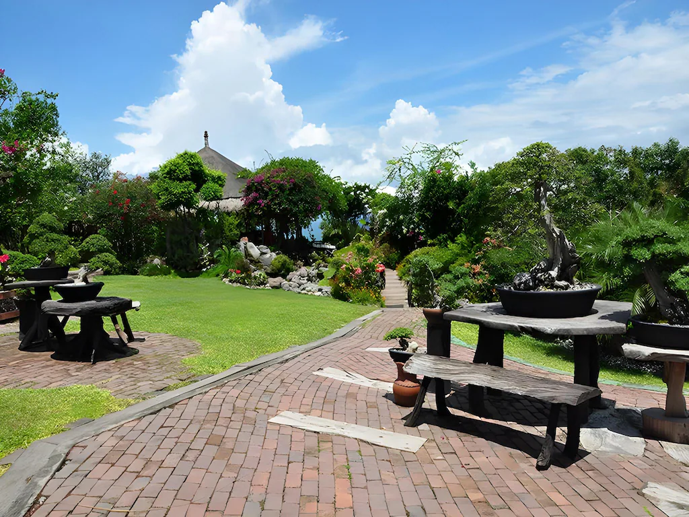
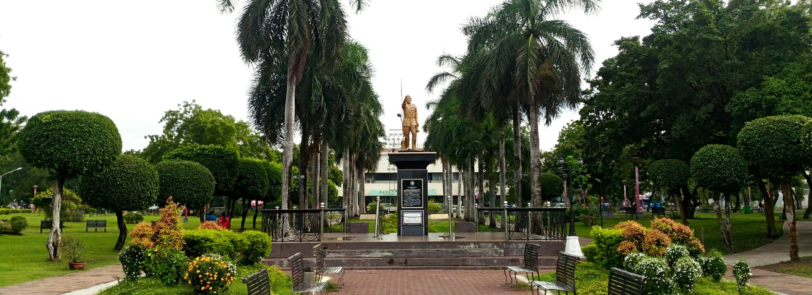

Travel guides
Build Your GenSan Trip, One Day at a Time
Explore simple one-day itineraries featuring tuna experiences, city landmarks, local food, scenic stops, and practical travel tips—then mix and match them for a longer stay.
Travel essentials
Plan Your GenSan Trip
Practical guides to help you get around General Santos City with ease and plan a smooth, enjoyable visit.
Things To Do Guides
Places Worth Exploring
Discover visitor-friendly attractions and local places around GenSan that are worth adding to your itinerary.

Visit the GenSan Fish Port
Start early to experience the city’s famous tuna industry, see the morning port activity, and review practical reminders before your visit.
Read Fish Port Guide
Sarangani Highlands Garden
Add a relaxing garden, dining, and city-view stop to your itinerary—especially after an early Fish Port visit.
Read Highlands Guide
Plaza Heneral Santos
Enjoy a simple downtown stop for walking, photos, exercise, and nearby landmarks in the heart of General Santos City.
Read Plaza Guide